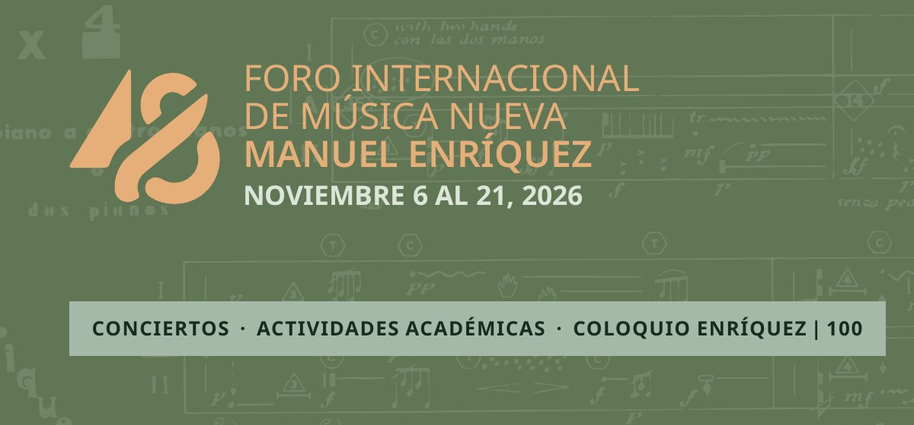
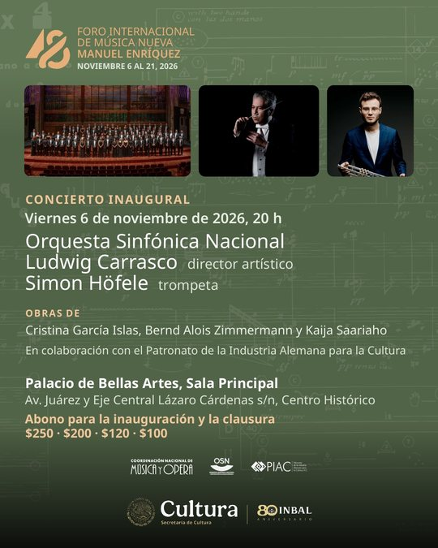
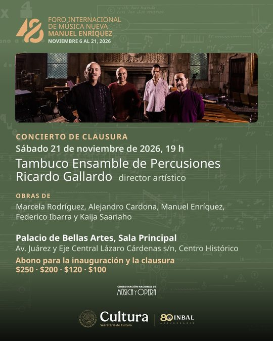

 |
DEL 6 AL 21 DE NOVIEMBRE DE 2026 Les invitamos al 48º Foro Internacional de Música Nueva Manuel EnríquezQuerida comunidad del Foro: Del 6 al 21 de noviembre, la música de nuestro tiempo suena en la Ciudad de México y en Guerrero, Jalisco, Michoacán, Nuevo León, Veracruz y Yucatán, con ecos en San Luis Potosí (30 de octubre) y Oaxaca (28 de noviembre y 1 de diciembre). Este año celebramos además el centenario de Manuel Enríquez (1926-1994), el compositor que da nombre al Foro, con un coloquio y conciertos dedicados a su obra. Gracias a quienes hacen posible esta edición: intérpretes, compositoras y compositores, ponentes, sedes y equipos de trabajo. Les invitamos a acompañarnos y a compartir esta invitación con sus amistades. Coordinación Nacional de Música y Ópera |
47 conciertos | 262 obras interpretadas | 51 estrenos mundiales | 58 estrenos en México | 14 actividades académicas | 23 sedes en 9 entidades |
|
PALACIO DE BELLAS ARTES, SALA PRINCIPAL Inauguración y clausura Viernes 6 de noviembre · 20 h Concierto inaugural Orquesta Sinfónica Nacional, Ludwig Carrasco y Simon Höfele Obras de Cristina García Islas, Bernd Alois Zimmermann y Kaija Saariaho 1 estreno mundial y 2 estrenos en México |  Sábado 21 de noviembre · 19 h Concierto de clausura Tambuco Ensamble de Percusiones y Ricardo Gallardo Obras de Marcela Rodríguez, Alejandro Cardona, Manuel Enríquez, Federico Ibarra y Kaija Saariaho 2 estrenos mundiales |
|
Abono para la inauguración y la clausura $250 · $200 · $120 · $100 Palacio de Bellas Artes, Sala Principal · Av. Juárez y Eje Central, Centro Histórico |
|
18 Y 19 DE NOVIEMBRE Coloquio Manuel Enríquez 100Dos jornadas de conferencias y mesas para pensar la obra y la figura de Manuel Enríquez a cien años de su nacimiento. Miércoles 18 de noviembre · Aula Magna, Cenart Jueves 19 de noviembre · Conservatorio Nacional de Música Y en concierto: Francisco García Torres: Enríquez 100 (miércoles 18, 19 h, Palacio de Bellas Artes, Sala Manuel M. Ponce) y Cuarteto de Bellas Artes: Enríquez 100 (sábado 21, 12 h, Palacio de Bellas Artes, Sala Manuel M. Ponce). |
DEL 30 DE OCTUBRE AL 1 DE DICIEMBRE Programación día por díaEntrada libre con cupo limitado, salvo la inauguración y la clausura (abono). Cada título lleva a su página en el sitio del Foro, con el programa, las semblanzas y las notas. | VIERNES 30 DE OCTUBRE | | 20 h | San Luis Potosí: OSLP Ecos del Foro · Centro Cultural Universitario Bicentenario, San Luis Potosí | | VIERNES 6 DE NOVIEMBRE | | 20 h | INAUGURACIÓN: OSN, Carrasco / Höfele Palacio de Bellas Artes, Sala Principal | | 20 h | Xalapa: OSX Centro Cultural Tlaqná, Sala Principal, Xalapa, Veracruz | | SÁBADO 7 DE NOVIEMBRE | | 12 h | Maratón de guitarras Jardín Escénico, Pabellón Escénico | | 17 h | Instalación sonora: Nuño de Buen Casa Rafael Galván, UAM | | 19 h | Gonzalo Gutiérrez, piano Palacio de Bellas Artes, Sala Manuel M. Ponce | | DOMINGO 8 DE NOVIEMBRE | | 12 h | Instalación sonora: Nuño de Buen / Vigueras Casa Rafael Galván, UAM | | 16:30 h | Cuarteto Arcano Museo Universitario Arte Contemporáneo, UNAM | | 18 h | OJUEM: Areán / Rosado Centro Cultural Universitario, UNAM, Sala Nezahualcóyotl | | LUNES 9 DE NOVIEMBRE | | 19 h | Black Noise & Victoria Amaro Jardín Escénico, Pabellón Escénico | | 19 h | Morelia: Ensamble Danaus Centro Mexicano para la Música y las Artes Sonoras, Morelia, Michoacán | | MARTES 10 DE NOVIEMBRE | | 11 h | Conferencia: El piano contemporáneo Actividad académica · Conservatorio Nacional de Música | | 17 h | Monterrey: Q-SION, percusiones Escuela Superior de Música y Danza, Sala Chopin, Monterrey, Nuevo León | | 17 h | Mesa redonda «De la escucha al espacio: la instalación como nuevo territorio» Actividad académica · Casa Rafael Galván, UAM | | 19 h | Alberto Rosado, piano Palacio de Bellas Artes, Sala Manuel M. Ponce | | 19:30 h | Guadalajara: Dúo Gasparini-Monnet Martes de Música, Ex Convento del Carmen, Sala Higinio Ruvalcaba, Guadalajara, Jalisco | | MIÉRCOLES 11 DE NOVIEMBRE | | 10 h | Clase maestra de piano Actividad académica · Conservatorio Nacional de Música | | 19 h | Generación Espontánea Museo de Arte Carrillo Gil | | 19 h | Piccolegio / Trío LaMN Jardín Escénico, Laboratorio Escénico | | JUEVES 12 DE NOVIEMBRE | | 19 h | Alberto Rosado, piano Museo Universitario Arte Contemporáneo, UNAM | | 19 h | Morelia: Asako Arai, flauta Centro Mexicano para la Música y las Artes Sonoras, Morelia, Michoacán | | VIERNES 13 DE NOVIEMBRE | | 17 h | Dirén Checa, violín Jardín Escénico, Laboratorio Escénico | | 19 h | Coro de Madrigalistas de Bellas Artes: Cadet Jardín Escénico, Pabellón Escénico | | 19 h | Morelia: Julio I. Cervantes, guitarra Centro Mexicano para la Música y las Artes Sonoras, Morelia, Michoacán | | 19 h | Monterrey: Eusebio Sánchez, percusiones Escuela Superior de Música y Danza, Sala Chopin, Monterrey, Nuevo León | | 19:30 h | Mérida: Carmen Maldonado, percusión teatral Universidad de las Artes de Yucatán, Mérida, Yucatán | | SÁBADO 14 DE NOVIEMBRE | | 11:30 h | Alberto Rosado, piano Museo Nacional de Arte, Salón de Recepciones | | 12 h | Maratón de percusiones Jardín Escénico, Pabellón Escénico | | 13 h | Ensamble de Música Nueva (FaM-UNAM) Facultad de Música, UNAM, Sala Xochipilli | | 17 h | Dúo Gasparini-Monnet Palacio de Bellas Artes, Sala Manuel M. Ponce | | 19 h | Cepromusic: Saariaho Colegio de San Ildefonso, UNAM, Anfiteatro Simón Bolívar | | 19 h | Acapulco: Fabián Rangel Centro Cultural Domingo Soler, Acapulco, Guerrero | | DOMINGO 15 DE NOVIEMBRE | | 12 h | Coro de Madrigalistas de Bellas Artes: Cadet Palacio de Bellas Artes, Sala Manuel M. Ponce | | 17 h | Vicente Moronta, oboe Jardín Escénico, Laboratorio Escénico | | 18 h | Dúo Arco y Teclas / Trío Siqueiros Jardín Escénico, Pabellón Escénico | | 19 h | Ehecatl Flores, fagot contrabajo Jardín Escénico, Laboratorio Escénico | | MARTES 17 DE NOVIEMBRE | | 17 h | Presentación del libro No me basta Actividad académica · Jardín Escénico, Lobby del Pabellón Escénico | | 19 h | Calderone / Bassanese: Scodanibbio Jardín Escénico, Pabellón Escénico | | MIÉRCOLES 18 DE NOVIEMBRE | | 10 h | Conferencia: Luis Jaime Cortez Coloquio Manuel Enríquez 100 · Aula Magna, Cenart | | 11:10 h | Mesa 1: Un retrato de amigos Coloquio Manuel Enríquez 100 · Aula Magna, Cenart | | 12:30 h | Mesa 2: Sus intérpretes Coloquio Manuel Enríquez 100 · Aula Magna, Cenart | | 14 h | Conferencia: Iracema de Andrade Coloquio Manuel Enríquez 100 · Aula Magna, Cenart | | 19 h | Electroacústica I Casa Rafael Galván, UAM | | 19 h | Francisco García Torres: Enríquez 100 Palacio de Bellas Artes, Sala Manuel M. Ponce | | 19 h | Morelia: Electroacústica I Centro Mexicano para la Música y las Artes Sonoras, Morelia, Michoacán | | JUEVES 19 DE NOVIEMBRE | | 10 h | Tres acercamientos a Oltracuidansa de Scodanibbio Actividad académica · Escuela Superior de Música | | 10 h | Conversación: Susana Enríquez Coloquio Manuel Enríquez 100 · Conservatorio Nacional de Música | | 11:10 h | Mesa 3: El gestor Coloquio Manuel Enríquez 100 · Conservatorio Nacional de Música | | 12 h | Conferencia: Sergio Cárdenas Coloquio Manuel Enríquez 100 · Conservatorio Nacional de Música | | 13 h | Mesa 4: Entre disciplinas Coloquio Manuel Enríquez 100 · Conservatorio Nacional de Música | | 14:20 h | Conferencia: Leonora Saavedra Coloquio Manuel Enríquez 100 · Conservatorio Nacional de Música | | 19 h | Russek: concierto electroacústico Casa Rafael Galván, UAM | | 19 h | Morelia: Electroacústica II Centro Mexicano para la Música y las Artes Sonoras, Morelia, Michoacán | | 20 h | OCBA Palacio de Bellas Artes, Sala Manuel M. Ponce | | 20 h | Electroacústica II Casa Rafael Galván, UAM | | VIERNES 20 DE NOVIEMBRE | | 17 h | Iracema de Andrade / ÓNIX Claustro de Sor Juana | | 19 h | Cepromusic Jardín Escénico, Pabellón Escénico | | 19 h | Cuarteto Ruvalcaba Xico. Antigua Sede del Senado | | SÁBADO 21 DE NOVIEMBRE | | 12 h | Cuarteto de Bellas Artes: Enríquez 100 Palacio de Bellas Artes, Sala Manuel M. Ponce | | 17 h | Ensamble Sonus Palacio de Bellas Artes, Sala Manuel M. Ponce | | 19 h | CLAUSURA: Tambuco Palacio de Bellas Artes, Sala Principal | | SÁBADO 28 DE NOVIEMBRE | | 20 h | Ocotlán: Dúo Gasparini-Monnet Ecos del Foro · Fundación Cultural Rodolfo Morales, Ocotlán de Morelos, Oaxaca | | MARTES 1 DE DICIEMBRE | | 20 h | Oaxaca: Dúo Gasparini-Monnet Ecos del Foro · Centro Cultural San Pablo, Oaxaca, Oaxaca |
|
Comparte el ForoCada evento tiene su postal para redes sociales, que se puede descargar en su página del sitio o en Descargas, junto con el programa de mano y el programa resumido. ¿Te reenviaron este correo? Suscríbete al boletín de noticias del Foro. Recibes este correo porque participas en el 48º Foro Internacional de Música Nueva Manuel Enríquez o formas parte de su comunidad. Si prefieres no recibir más mensajes, basta con responder a este correo. |
|
|